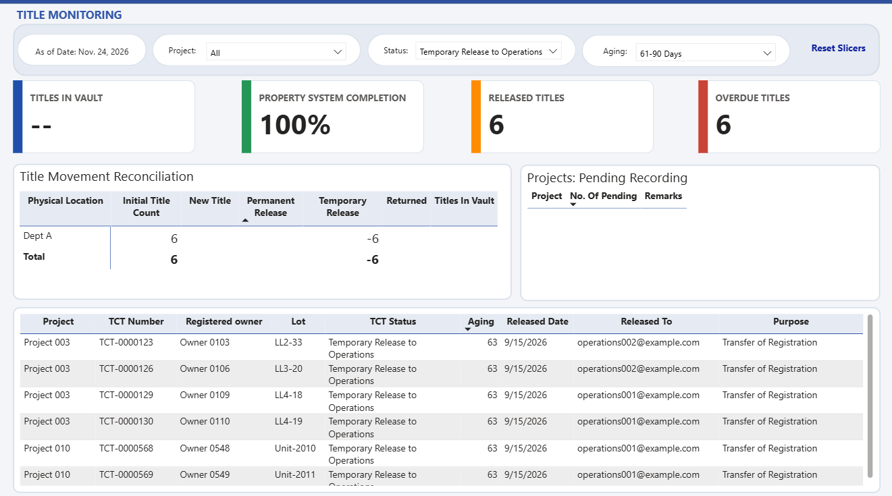

KPI cards
Titles in vault, property system completion, released titles and overdue titles, so the main numbers are visible at a glance.
A Power BI report that tracks where each title is, which ones have been released or are overdue, and whether the property system is up to date.
Titles move in and out of the vault, and every movement needs to be recorded. The team needs to know where each title is, which have been released, which are overdue, and whether the property system matches what has actually happened. The dashboard tracks about 900 titles, with more coming, and Finance manages it.

The full dashboard with sample data. Click the image to see it full size.
Titles in vault, property system completion, released titles and overdue titles, so the main numbers are visible at a glance.
By physical location, it shows the initial title count, new titles, permanent and temporary releases, returned titles and the titles now in the vault.
The number of pending titles for each project, with remarks that explain what is holding each group up.
Every title with its project, TCT number, registered owner, lot, status, aging, release date, who it was released to and the purpose.
An as-of date, plus filters for project, status and aging, with a reset button to clear them.
The slicers filter every visual on the page. Here the dashboard is filtered to titles temporarily released to Operations that are 61–90 days out. Released Titles and Overdue Titles both show 6, and the table lists exactly those six titles.

Status: Temporary Release to Operations. Aging: 61-90 Days. The cards, reconciliation and detail table all follow the slicers.
Each decision below answers a real question about how the numbers should be read.
A title is overdue when it was temporarily released to Sales or Operations, has not been given back to the custodian, and has been out for more than 60 days. This keeps the overdue count focused on titles that should have come back.
Permanent and temporary releases appear as negative numbers, so the reconciliation reads like a running balance and the drop in total titles is easy to see. In the sample data, 980 + 11 − 25 − 26 + 1 = 941 titles in the vault.
The measures look for words such as “temporary” and “permanent” in the status instead of using a fixed list, so new status names still land in the right column.
Days out are grouped into 0–30, 31–60, 61–90, 91–120 and 120+ days, and the Aging slicer filters by those groups. Only titles on temporary release get a bucket.
The pending table includes remarks, such as a block not listed in the title or a title not yet recorded in the property system, so each count comes with a reason.
I'm happy to walk through how the model and measures work.